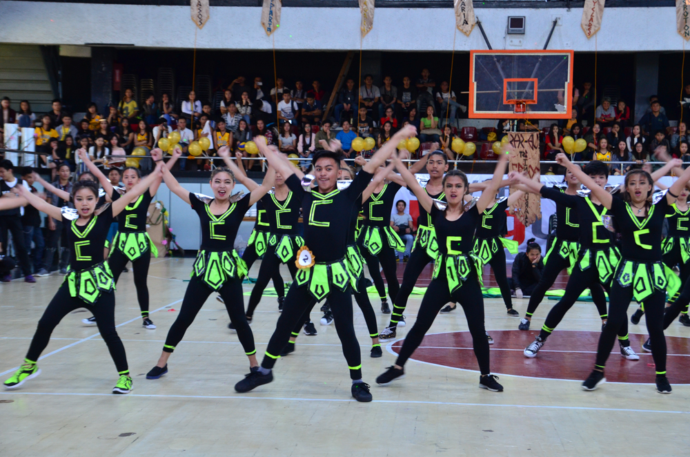
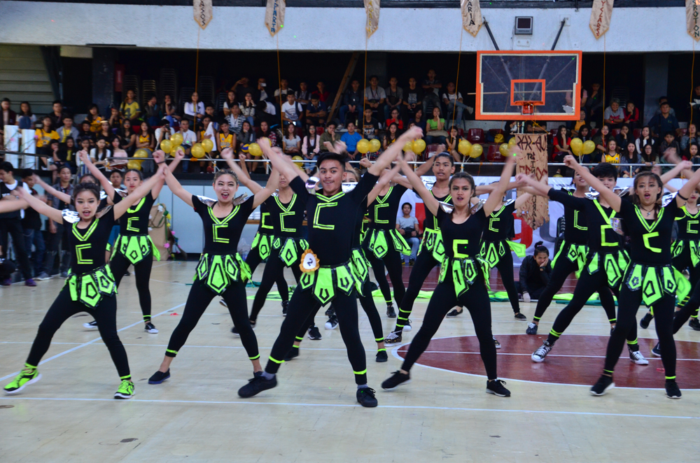
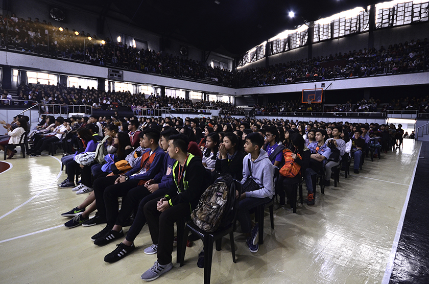
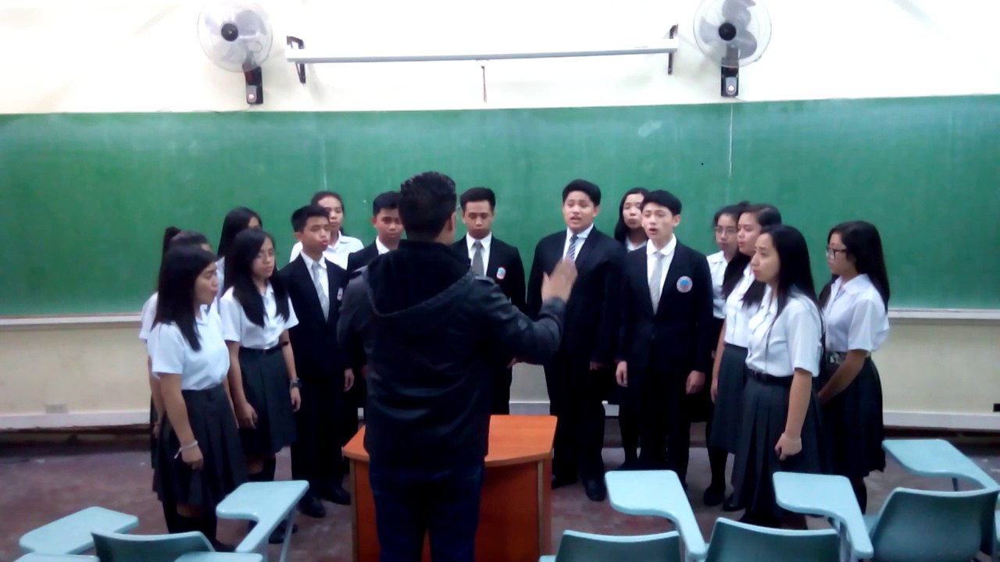
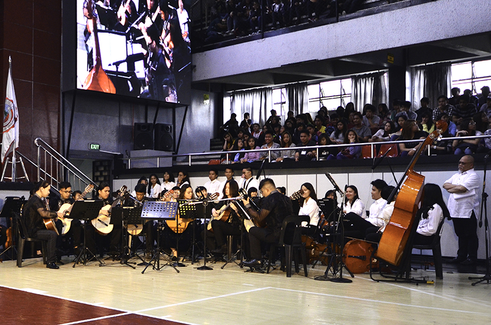
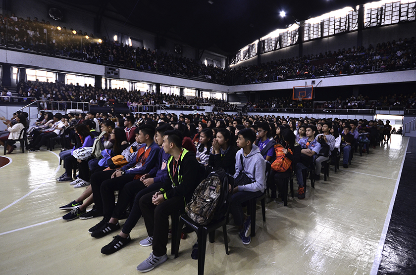
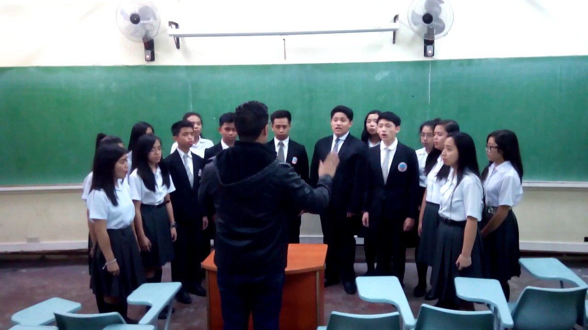
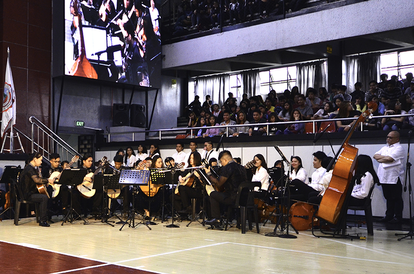

Welcome to the University of Baguio High School Website. Where students have a fun learning environment. We dont only teach students the subject required but we also let them have fun with the activities of the School. Activities like Intramurals, Cantata, Festivals, and more.
| Vission | Mission | Objectives |
| In pursuit of perfection, the University of Baguio is committed to provice balanced quality education by nurturing academic excellence, relevant social skills and ethical values in a fun learning environment | The University of Baguio Educates individal to be empowered professionals in the global community | The University of Baguio aims to produce a graduate who : 1. Exemplifies a higher standard of learning; 2. Manifest the mastery of relevant skilss; 3. Upholds a conduct that is rightdul and just; 4.Undertakes scientific and significant researches: 5.Advocates sustainable programs for the community and the environment; and 6. Leads and demonstrates exemplary performance in the field of specialization. |
| Club Activities |
|
Volleyball Basketball Journalism Arnis Photography Boy Scout Girl Scout Science Club Math Club Englsih Club Broadcasting (English and Filipino) Note: For those who are interested you can go to the Principal Office to know if there are still available spots for students |
| School Photos |
 

 





More Images |